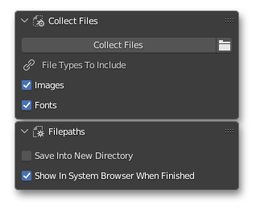

DOCUMENTATION
2022 LUKE STILSON
Blender Pixel Perfect Python Extensions and Asset Library
Created by Luke Stilson 2022
TOOLS DOCUMENTATION
File Manager

The File Manager panel collects all associated files used in the currently open project, copies these files, and places them in a directory relative to the project.
For instance if the .blend is saved on the desktop, the "Collect Files" button will create a new folder on the desktop named "Project Files", then creates a folder for any images "Images" and a folder for any fonts "Fonts" inside the desktop\Project Files\ folder.
For best results, save each project in it's own unique folder
This function results in paths of the .blend to be relative, meaning if the .blend and Project Files folder are transferred to another device, everything in the .blend will clearly transfer without any linking issues.
Note that this does not clear out unused images if an image is removed from the project after the Collect Files function is ran , and Collect files never runs automatically (if files are added, you must Collect Files again)